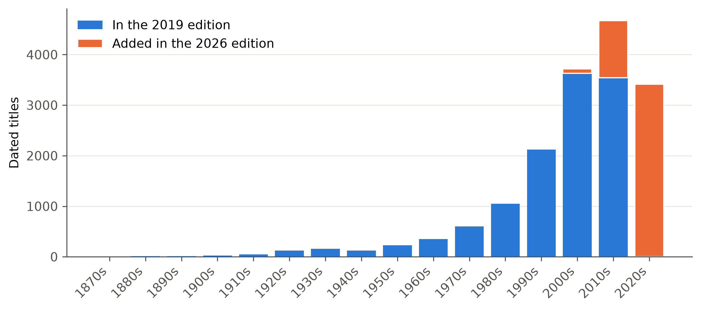
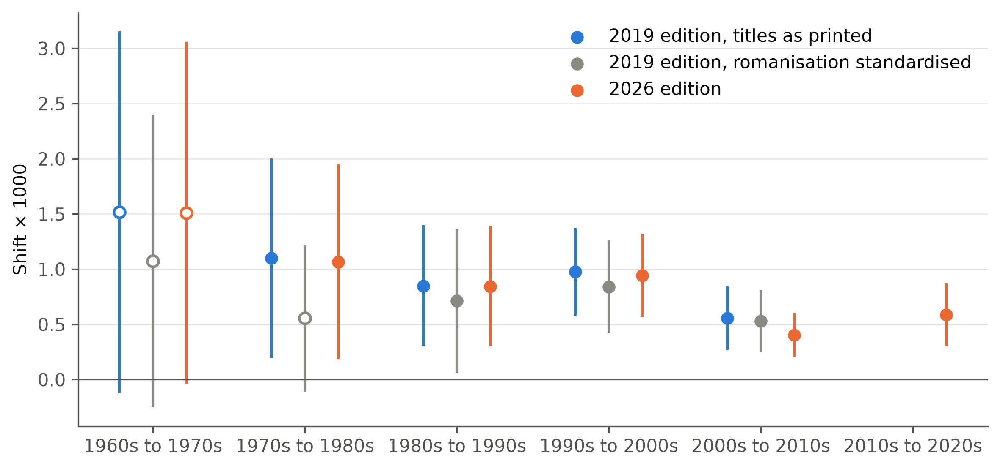
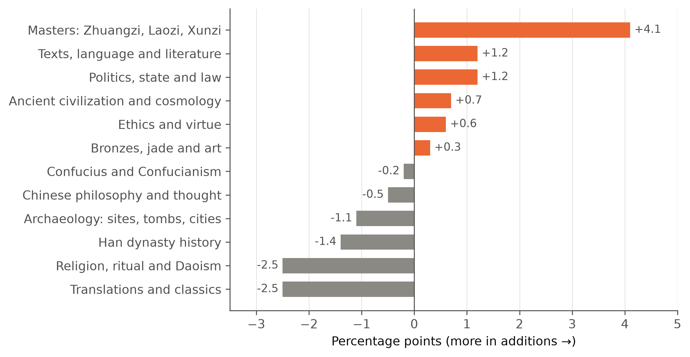
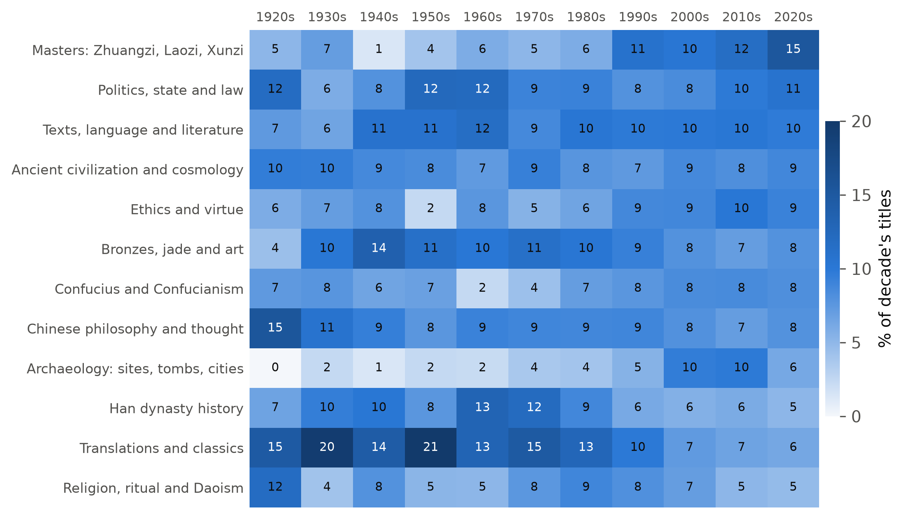

Re-reading the ACC bibliography
What two editions of a 17,000-entry bibliography show about Western-language scholarship on ancient China
Summary
In 2020 I studied how Western-language scholarship on ancient China changed over two centuries, using Paul R. Goldin’s Ancient Chinese Civilization: Bibliography of Materials in Western Languages. In 2026 I rebuilt that study on the 2019 and 2026 editions with a new parser, a full check of every entry, and multilingual language-model embeddings.
- The bibliography grew from 12,214 to 16,928 entries (+38.6%) between the two editions.
- The subject matter of titles shifts slowly from decade to decade, and from about 1980 those shifts point in a consistent direction. This is the strongest result, and it holds in both editions.
- Part of the apparent change in the 1970s is the move from Wade-Giles to pinyin spelling rather than a change of subject.
- Several conclusions of the 2020 study do not hold on the rebuilt data.
The bibliography and its growth
Most of the bibliography is recent: about three quarters of the 2019 edition’s dated titles were published in 1990 or later. The 2026 additions are mostly from the 2010s and 2020s, which partly reflects the usual lag before recent work is listed.
| Measure | 2019 | 2026 | Change | Change (%) |
|---|---|---|---|---|
| Records (all record classes) | 12,287 | 17,015 | +4,728 | +38.5 |
| Entries | 12,214 | 16,928 | +4,714 | +38.6 |
| Editorial notes | 73 | 86 | +13 | +17.8 |
| Dated titles | 12,207 | 16,902 | +4,695 | +38.5 |
| Contributor mentions | 13,824 | 19,276 | +5,452 | +39.4 |
| New or reworded dated titles in 2026 | 5,049 | |||
| of which differ from a 2019 title only in case or punctuation | 154 |
How the field’s subject matter moves
Each title was converted into a numerical representation of its meaning by a multilingual language model. For each decade I took the average of those representations and measured how far it moves from the previous decade, testing every step against a shuffled-years baseline.

The shifts are small but, from the 1980s onward, clearly above chance. The 1970s step passes both tests on the titles as printed, but about half of it disappears when Wade-Giles and pinyin spellings are standardised, and it then falls below two standard errors. The steps from 1980 to 2010 survive standardisation, and in the 2026 edition the new step from the 2010s to the 2020s is also clear.
The steps also point the same way. Directional coherence measures whether consecutive steps continue in the same direction; because consecutive steps share a decade, chance is negative.
| Series | Observed | Chance (null mean) | p (400 shuffles; floor 0.0025) |
|---|---|---|---|
| 2019, corrected titles | 0.481 | -0.459 | 0.0025 |
| 2019, romanisation standardised | 0.396 | -0.458 | 0.0025 |
| 2026 edition | 0.453 | -0.465 | 0.0025 |
What the 2026 additions are about
Titles were grouped into twelve exploratory subject clusters fitted on the 2019 edition. The 2026 additions were placed into the same clusters without refitting, so differences reflect the bibliography rather than the method. The cluster names are working labels, not validated categories.

The additions lean towards the classical masters (Zhuangzi, Laozi, Xunzi), texts and literature, and politics and law, and contain fewer translations and fewer titles on religion and on Han history. They fit the existing clusters almost as closely as the 2019 titles do, so no new subject area appears.
Subject mix by decade
The same twelve clusters can be followed across the whole bibliography. Each column below shows how a decade’s titles divide among them in the 2026 edition. Decades before the 1950s have under 250 titles each, so their shares move a lot on a few titles; decades before the 1920s are left out.

Since the 1980s the masters (Zhuangzi, Laozi, Xunzi), archaeology, and ethics and virtue have taken larger shares, and translations, Han history and religion smaller ones. The 2019 edition shows the same pattern; its decade shares are in the subjects by decade file.
What changed from the 2020 study
The rebuilt data do not support three conclusions of the 2020 study: an acceleration of change, a convergence of the field, or a ranking of decades by how much they changed. The topic model used in 2020 (LDA) was unstable from run to run, and its topics were confounded by title language. The input file of the 2020 study is lost, so that analysis cannot be re-scored directly.
Data quality
Every entry of the 2019 edition was checked against its parsed fields, which produced about 4,300 corrections, including roughly 800 recovered dates. Re-running the analysis on the corrected data changed no conclusion.
| Field | Errors, first parser | Accuracy, first parser (%) | Accuracy, improved parser (%) |
|---|---|---|---|
| Contributor names | 604 | 95.05 | 97.59 |
| Contributor count | 434 | 96.45 | 99.56 |
| Contributor order | 0 | 100.00 | 100.00 |
| Contributor roles | 31 | 99.75 | 99.55 |
| Title | 142 | 98.84 | 99.03 |
| Year | 867 | 92.90 | 95.13 |
| Year source | 794 | 93.50 | 95.61 |
| Language | 226 | 98.15 | 98.17 |
| Publication type | 296 | 97.58 | 97.85 |
| Journal or book | 1,202 | 90.16 | 92.92 |
Methods
- Parsing. Each entry was split into contributors, title, year, publication type, journal or book, and language.
- Checking. Every 2019 entry and every new 2026 entry was checked against its parsed fields with the help of an AI tool (Claude), which meant sending entry-level data to that tool for processing. I ruled on every disagreement in the 2019 edition; in the 2026 edition the same rulings were applied, and I decided the cases they did not settle. Entries repeated unchanged in 2026 inherited their 2019 checks; a random audit of 80 of them found no substantive errors.
- Embedding. Titles were embedded with a multilingual sentence model (
paraphrase-multilingual-MiniLM-L12-v2, 384 dimensions). - Drift. For each decade, the average title vector was computed. Drift is the unbiased cosine separation between consecutive decade averages, tested by permutation (years shuffled) with jackknife standard errors. A step is counted when p < 0.05 and z ≥ 2.
- Coherence. Whether consecutive steps point the same way, compared with a shuffled baseline.
- Subjects. Twelve exploratory clusters fitted on 2019; the 2026 edition mapped onto them without refitting.
Limitations
- The analysis describes a curated bibliography, not the whole field.
- The 2020s are incomplete, and each edition under-covers its most recent years.
- The subject clusters and their names are exploratory until checked against human coding.
- Titles alone are a narrow window on content, and the measured shifts are small in absolute size.
Data
Aggregate tables only; no entry-level data, titles or names. Languages with fewer than five titles in both editions are grouped, and bins with fewer than 20 titles are omitted.
Acknowledgement
Data from Paul R. Goldin, Ancient Chinese Civilization: Bibliography of Materials in Western Languages (2019 and 2026 editions), used with permission. The current version is available on Academia.edu. Any errors are mine.